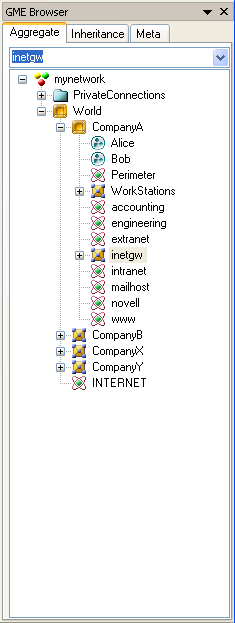
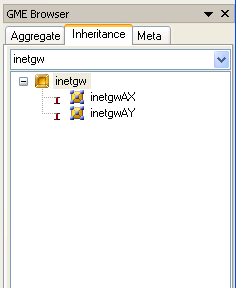
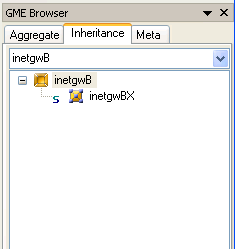

Fig 5.2 Working with the Aspect Mapping dialog
Introduction to Lesson 5
5.1 Aspects
5.2 Folders
5.3 Using subtypes and instances
This lesson introduces three new concepts that are all found exclusively in GME (compared to other modeling tools). They are all used by the modeling expert to handle complexities that arise when large-scale, real-world models are built. In other words, these features make GME a truly scaleable, industry-grade modeling environment.
It is a natural goal of any modeling project to be able to extend the paradigm to add new functionality. However, a model's diagrams may become unacceptably complex as a result of such extensions. We need a mechanism to maintain readability by segmenting or filtering the diagrams.
In the previous lesson, the introduction of administrators to the networking paradigm was a good example of the extension of a modeling project. It also included the risk of making some diagrams incomprehensible. Wouldn't it be helpful if the new, administrative aspect could be separated from the existing one?
Aspects in GME provide a possible solution for this problem. Aspects are defined in the metamodel, and are associated with models. Models typically have multiple aspects. Each aspect specifies what kinds of child objects are visible and editable while the aspect is activated for an open model. Furthermore, if a child of a model is opened, the aspect used in the child is the same one that is used in the parent. If the child does not have a corresponding aspect, aspect mapping rules must be specified in the MetaInterpreter.
Aspects are not completely new to this tutorial, since they have been used extensively in the metamodeling environment. ParadigmSheets have four aspects: Class Diagram, Visualization, Attributes, and Constraints. Each aspect is used to define different things. Of course, each aspect only shows relevant information: for example, the Attributes aspect displays classes and generalization relationships, but omits containment relationships and associations.
In the networking example, we have been using only one aspect, Connectivity, until now. Let us make NetDiagrams more readable by separating the original contents, network connectivity diagrams, from the administrative information that was added when Sets were introduced in Lesson 4:
Folders, like aspects, are not a completely new concept; we have been using one since the very beginning of this tutorial. That was the root folder, the topmost container of all objects in the modeling hierarchy. This section discusses other folders and what they can be used for.
The top-level structure for most modeling projects does not consist of a single object containing others; it involves several objects that are related to, but not contained by, each other. For example, a school has classrooms, teachers, and students; but only the classrooms are "contained" by the school, while teachers and students exist independently (a teacher may work for several schools simultaneously). A natural representation of this project may contain several root FCOs (FCOs not contained by any upper level model): one for the school, and one for each individual associated with it.
(The difference between a root FCO and the root folder lies in the number of objects allowed; there can be multiple root FCOs, as in the example above, but only a single root folder.)
If there are numerous root FCOs, it might be a good idea to organize them somehow. For the school model, we could separate schools, teachers and students from each other. Folders provide this organization, just like directories in a file system. Depending on the specifications in the metamodel, folders can contain certain FCOs (including root FCOs, obviously), and a number of other folders. They cannot be contained by FCOs, however, because they are merely the top-level organizers of a modeling project.
A significant difference between folders and directory systems is that folders are typed, while directories are uniform. In other words, the metamodel controls what kind of folders (and how many of them) will be available in the modeling project. For example, if a separate folder is desired for each type of object - schools, teachers and students - three subfolders must be specified, each contained by the root folder with a cardinality of 1. Similarly, the kind and number of root FCOs is also specified in the metamodel.
Please note that even though folders are part of a GME modeling project hierarchy, they are not considered modeling objects (FCOs) like atoms, references, etc. In good models, folders do not represent any real-world objects or containers; they are merely organizers of the different kind of things that are represented in a modeling project. Because of this, folders do not have attributes or aspects (although they do have constraints).
The folder structure is usually limited in depth, which means it does not contain recursion. However, if a folder specifies itself among its potential children, the folder structure becomes recursive and unbounded, just like the directory tree of modern file systems.
5.2.1 Folder example
Let us see how folders can be used in the networking paradigm. Ever since the model LeasedLine1 was introduced, there has been nothing (except the name) that distinguishes the Internet from this relatively unimportant leased-line network in the root folder. It would be nice if LeasedLine1 and similar private networks could be hidden from the casual viewer. Let's create a new folder, "PrivateConnections" (Fig 5.4).
Imagine that a company has several branches, and every branch has an identical router (same type, model, etc.). The company IT policy requires maintaining uniformity among the routers. Is it possible to express these similarities in a model?
Subtypes and instances are mechanisms in GME that define similarities between objects. They are essentially deep copies of a master object, and they do not break the relationship with the master: if the master changes in any way (attributes, associations, contained objects, etc.), subtypes and instances - also called derived objects - make the same changes automatically. Also, the differences between a master and its derived object are restricted as follows:
We will now use one of the previous test models to create several instances of a router.
|  |  |
|  |
Instances are not references; they are real objects, deep copies of their
parents. Hence, ports of the master router and ports of the derived routers are
entirely separate objects. Each port may have different connections, just like
independently created objects.
Now let's see how instances have improved our model. Suppose the company decides to update all routers at once: a new serial port is added, and the speed of the existing interface is updated to 2 Mbps. All we need to do is add the new port to the master router, and the instances immediately inherit it. What happens to the "speed" attribute of an existing port when it is updated? The change is also propagated to the children, unless the attribute is explicitly set in a derived object. Since we have not touched the "Speed" attribute in any of the instances, the new setting will be propagated to all of them.
The master object of the inheritance - an existing router from an existing branch - was selected rather randomly. It would have been much more elegant to store the master in a different location, perhaps in a designated folder. This would require changing the paradigm by adding a new folder that is allowed to directly contain routers. Instead of doing all that work, we chose to demonstrate the spontaneous way of using instances instead, through this example.
| << Previous Lesson | Complete List | Next Lesson >> |